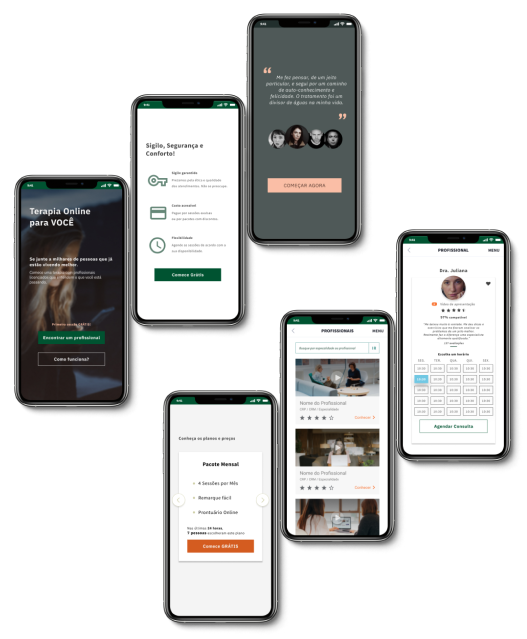
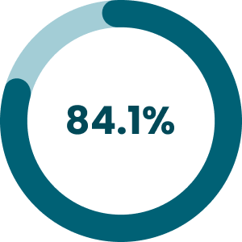
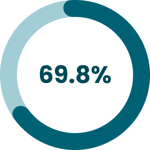
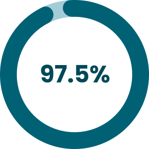
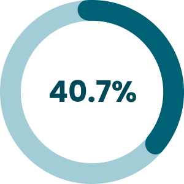
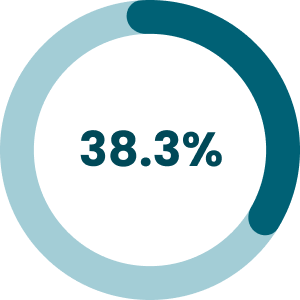
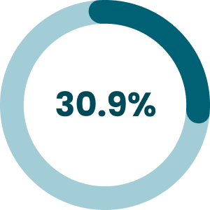

Design Roles
- Researcher
- UX Designer
- Visual Designer
Deliverables
- User Survey
- Competitive Analysis
- Personas
- User Journeys
- Sketches
- Wireframes
- Usability Tests
- Branding
- High Fidelity Mockups
- Prototype
Tools
- Figma
- Garagethinking
- Timezone Butler
- Trello
- Contrast
Part I: Overview
Summary
Fala Aí is an application that was created in an online UX hackathon. The team consisted of four people from Brazil, the Netherlands, Portugal, and the United States, who collaborated on this project remotely.
We created an application that helps to connect psychologists and patients, alleviating the obstacles and geographic barriers between them.
Problem
My team was challenged to help improve the health of Brazilians that needed psychological care and treatment. We found out the barriers to care included lack of access to help, lack of time, or (in the case of some patients) a lack of financial resources or needed help from experts that resided far from their geographic area.
Solution
After two weeks of intense work, we created the Fala Aí application. Fala Aí allows patients to connect with therapists to have the help they need from a distance and despite other aforementioned barriers.
Part II: Research and Discovery
We worked remotely as a team for two weeks using Slack to communicate, Trello to organize the agenda, and Timezone Butler to schedule our meetings efficiently across multiple time zones.
At the beginning of the process, we brainstormed together to prioritize and solidify our idea. The team collaborated on the entire process and plan. We met almost every other day and divided the project into parts to work individually to ultimately have everything completed in the most effective and timely manner.
User Survey
I started my part of this project by doing the questions for the user survey. After we discussed and corrected the questions in the group, I created the survey in Google Forms.
From this User Survey, we obtained 138 responses that helped the group to understand the patients’ frustrations and needs to create accurate personas and user journeys.
One important piece of information that we obtained from the data is that 84.1% of the people that answered the survey are current patients or are interested in the subject. We also discovered that 69.8% do some kind of therapy.

are patients or interested in the subject

do some kind of therapy
Another important piece of information we obtained (in a question that accepted more than one answer) was that the most important needs for patients included: trust in the professional (97.5%), price (40.7%), busy life (38.3%), and confidentiality (30.9%).

trust in the professional

price

busy life

confidentiality
Part III: Information Architecture
Sketches
The next step was creating some sketches for the project. Here are some sketches that I created that illustrate the main pages of the application.
Part V: Visual Design
Style Guide
Related to the style guide I created the color palettes and the typography.
Colors
After analyzing the psychology of the colors, and discussing it with the group, we decided that green, orange, and brown would be the main colors. We have chosen these colors because they are capable of transmitting the feelings that the brand wants to convey.
Green is a color that relates to harmony, calm, equilibrium, and also creates a feeling of rebirth. Brown is a color that transmits feelings of security and protection. Orange, is a color that creates a feeling of urgency and also creates a feeling that the product is affordable. This is good because we want the client to sign up for our product.
Here is the color palette we have chosen for our project:
Brand Colors
-
Primary -1
#21533F
-
Primary 0
#005331
-
Primary +1
#002E1B
-
Secondary -1
#F9BEA5
-
Secondary 0
#F97433
-
Secondary +1
#D45B20
Dark & Light
-
Dark -1
#754F44
-
Dark 0
#4F322A
-
Dark +1
#30302E
-
Light -1
#F4F4F4
-
Light 0
#F4F4D4
-
Light +1
#CFCFA9
Helpers
-
Success
#71E57D
-
Attention
#F0ADAD
-
Warning
#FFDF82
-
Info
#B2EFFF
Accessibility
After the study of the psychology of the colors, I worked on the accessibility of the colors.
According to WCAG (Web Content Accessibility Guidelines), the minimum contrast between the foreground and the background has to be at least 3:1 for 18pt and above typefaces, or 4.5:1 for other typefaces.
Following the WCAG commands, I created a table with the colors from our palette that could work well together.
In the first square there is the number we gave to the colors on our style guide, as you can see on the color palette above. In the second square, there is a demonstration of how that foreground and the background would work together. In the third square, I note the number related to the contrast between those two colors.
-
Background Primary 0 and text Light -1
-
Accessibility
-
Contrast 8.36 :1
-
Background Secondary 0 and text Dark +1
-
Accessibility
-
Contrast 4.76 :1
-
Background Secondary -1 and text Dark +1
-
Accessibility
-
Contrast 8.14 :1
-
Background Dark 0 and text Light -1
-
Accessibility
-
Contrast 10.47 :1
-
Background Dark +1 and text Light -1
-
Accessibility
-
Contrast 12.02 :1
-
Background Light -1 and text Dark +1
-
Accessibility
-
Contrast 12.02 :1
-
Background Light -1 and text Dark 0
-
Accessibility
-
Contrast 10.47 :1
-
Background Light 0 and text Dark +1
-
Accessibility
-
Contrast 11.84 :1
-
Background Light 0 and text Dark 0
-
Accessibility
-
Contrast 10.28 :1
Typography
Additionally, I created the typography for our Style Guide. IBM Plex Sans was used because there are many font weights to choose from and it is a popular typeface, so it is possible that the user will have already opened another website with the same typeface and therefore the page will load faster.
IBM Plex Sans
Regular | Bold
We created an application that helps to connect psychologists and patients, alleviating the obstacles and geographic barriers between them.
In addition, I created the Local Styles with the colors, typography, and grids in Figma to help us in the moment of the creation of the prototypes.
Usability Test
I created the usability test script and did the test with 2 people: Monica and Val.
Monica told us that she liked the app overall. She had some feedback for us when she saw the videos. Her feedback included that she wanted to see more diversity in the population and less sadness in the client images because that was a deterrent in obtaining services. She did not think the compatibility percentage of client and professional could be determined by an app and she thought the way we used stars to evaluate professionals should be revised. Monica also recommended that the price for services and the professionals’ therapeutic approaches should be listed early on to help the clients determine fit.
Val said that she thought the first page was intuitive and she was easily able to find professionals that were a good fit for her. This user liked the use of stars to evaluate the professionals and help determine quality of care. The user preference was that the calendar has multiple colors to differentiate open appointment times.
Presentation
After 2 weeks of hard work, we presented our work for the teacher that organized the UX Hackathon, Leandro Rezende, and the other teams.
I talked about the colors, typography, buttons and accessibility.
We received relevant feedback from the teacher that was leading the hackathon.
Conclusion
Participating in this project allowed me to refine my approach to the UX process while effectively collaborating in a remote, international team with members from the United States, Portugal, the Netherlands, and Brazil.
For future iterations, I would incorporate feedback to include a broader diversity of client images and introduce a new star rating scale for professionals. I would also make service prices and therapeutic approaches more transparent to help clients make informed decisions and redesign the onboarding page to enhance accessibility.
Prototype